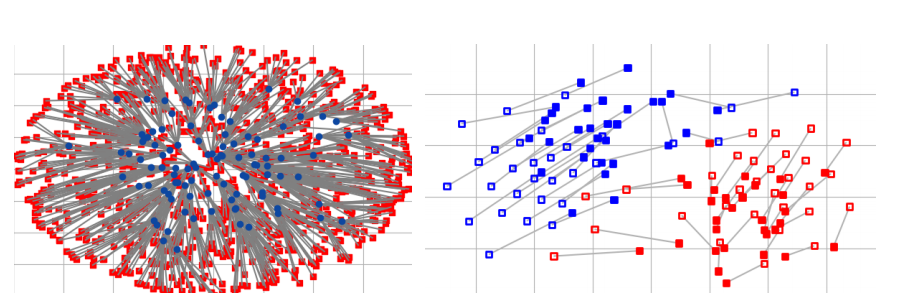
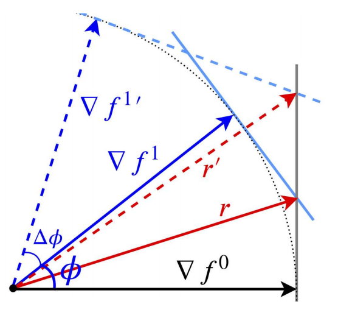

Fariborz Taherkhani
Postdoctoral Researcher
Carnegie Mellon University
About
Welcome to my homepage! I am currently a postdoctoral researcher in HSL working with Prof. Fernando De La Torre in the Robotics Institue at Carnegie Mellon University. I got my Ph.D. in computer science from the Department of Computer Science and Electrical Engineering at West Virginia University, where I worked with Prof. Nasser M. Nasrabadi. My research interests are machine learning and it's application in computer vision. I am currently working on 3D generative models, representation learning, self-supervised learning, semi-supervised learning, weakly supervised learning, domain adaptation, and multi-task learning.
News
Selected Publications

Transporting Labels via Hierarchical Optimal Transport for Semi-Supervised Learning
Error-Corrected Margin-Based Deep Cross-Modal Hashing for Facial Image Retrieval

PF-cpGAN: Profile to Frontal Coupled GAN for Face Recognition in the Wild
A deep face identification network enhanced by facial attributes prediction
Restoring highly corrupted images by impulse noise using radial basis functions interpolation
Services
Journal reviewer:
TIP, TIFS, IET Signal Processing, IEEE Signal Processing Letter, Trans. Neural Netw. Learn. Syst.
Conference reviewer:
NeurIPS, ICML, ICLR, ICCV, CVPR, WACV